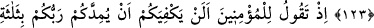
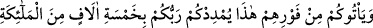
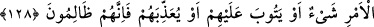
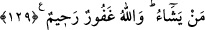

BEDİR SAVAŞI
123. Andolsun, sizler güçsüz olduğunuz halde Allah, Bedir’de de size yardım
etmişti. Öyle ise, Allah’dan sakının ki O’na şükretmiş olasınız.
124. O zaman sen, mü’minlere şöyle diyordun: İndirilen üç bin melekle
Rabbinizin sizi takviye etmesi, sizin için yeterli değil midir?
125. Evet, siz sabır gösterir ve Allah’dan sakınırsanız, onlar (düşmanlarınız)
hemen şu anda üzerinize gelseler; Rabbiniz, nişanlı beş bin melekle sizi takviye
eder.
126. Allah, bunu size sırf bir müjde olsun ve kalpleriniz bu sâyede rahatlasın diye
yaptı. Zafer, yalnızca mutlak güç ve hikmet sahibi Allah katındandır.
127, 128. Allah, kâfirlerden bir kısmının kökünü kessin veya onları perişan etsin,
böylece bozulmuş bir halde dönüp gitsinler -ki bu işte senin yapacağın bir şey
yoktur- yahut (müslüman olsunlar da) tevbelerini kabul etsin, ya da (ısrar
ederlerse) onlara azap etsin diye (Allah Bedir’de size yardım etti). Çünkü onlar
zâlimlerdir.
129. Göklerde ve yerde ne varsa Allah’ındır. Dilediğini bağışlar, dilediğine azap
eder. Allah, çok bağışlayıcı ve çok merhametlidir.
“Andolsun, siz zayıf iken Allah size Bedir’de de yardım etmişti” ifadesi tevekkülün
ashâb-ı kirâm (r.a.)’a kazandırdığı şeyleri hatırlatmaktadır.
Bedir, Mekke ile Medîne arasında bulunan bir su kuyusudur. Bedir kuyusunu Bedir